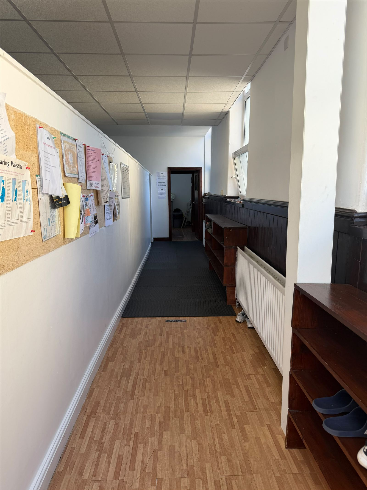
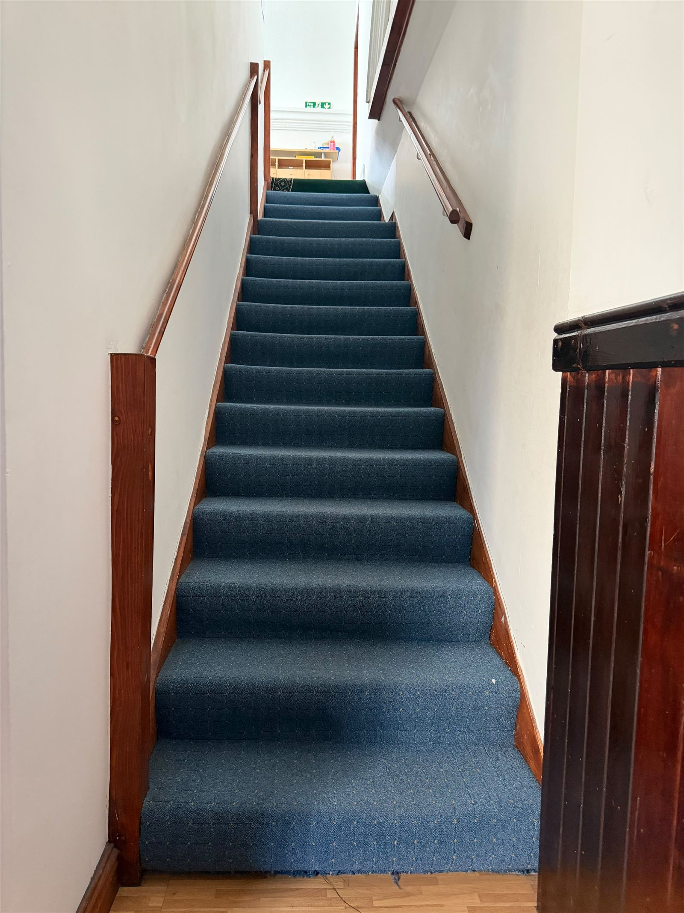
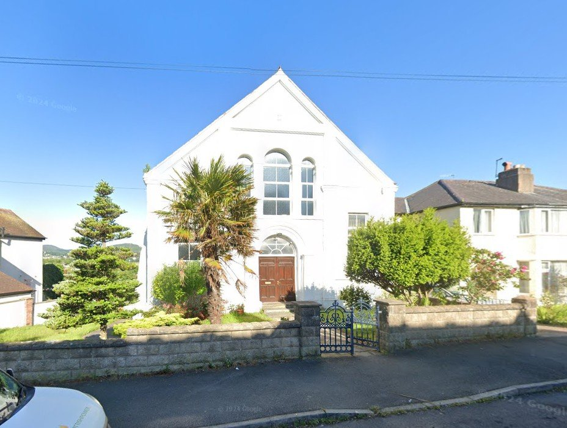

Contact & Location
We'd love to hear from you — whether you have a question, want to visit, or need urgent support.
Address
Canolfan Iman Centre
Glyn Y Marl Road
Llandudno Junction
LL31 9NS
Conwy, North Wales
Phone
Imam Mohamed (urgent contact):
07473 951781
Getting to Canolfan Iman Centre
We are located on Glyn Y Marl Road in Llandudno Junction, Conwy — easily reached from the A55 and Llandudno Junction railway station. Limited on-street parking is available nearby.
Visiting & Accessibility

Please remove your shoes at the entrance — racks are provided in the corridor.

Our main prayer hall is upstairs, with a downstairs prayer area also available via this staircase. There is currently no lift — please contact us in advance if step-free access would help your visit.
Get in Touch
Fill in the form and we'll get back to you as soon as we can. For urgent matters, please call Imam Mohamed directly.
Prefer email? Email us directly at canolfanimancentre@gmail.com.
